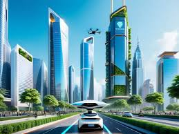

¿Hacia dónde vamos?
La inteligencia artificial está avanzando a un ritmo acelerado. En los próximos años, se espera que tenga un impacto aún mayor en la sociedad, la economía y nuestras vidas personales.
Posibilidades futuras
Desafíos por enfrentar